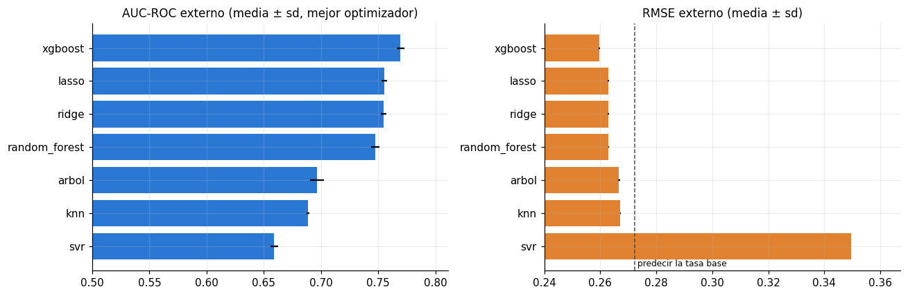

Regresión: 7 modelos x 4 optimizadores sobre TARGET#
Este capítulo ejecuta las 28 combinaciones de regresión de la Sección 2 (7 modelos x 4
optimizadores; el balanceo no aplica en regresión). Por decisión de diseño del proyecto, la
variable objetivo y la métrica son las mismas que en clasificación: TARGET (1 = dificultades
de pago) y AUC-ROC. El objetivo es una evaluación general y homogénea de los 14 algoritmos sobre
un mismo problema de negocio.
1. Qué significa una regresión sobre un objetivo 0/1#
Un regresor que minimiza el error cuadrático estima la media condicional del objetivo. Con
TARGET en {0, 1}:
es decir, estima la probabilidad de incumplimiento, igual que un clasificador probabilístico. Su predicción funciona como puntaje de riesgo, y el AUC-ROC, que solo depende del orden de los puntajes, se calcula exactamente igual que en clasificación. En el caso lineal (Ridge, Lasso) es el llamado modelo de probabilidad lineal.
Consecuencias que se esperan antes de mirar los resultados:
AUC. Los regresores flexibles deberían ordenar casi igual que sus contrapartes de clasificación. En el árbol CART la equivalencia es exacta en los cortes: la varianza de un nodo con proporción p de positivos es p(1-p), que es la mitad del índice de Gini. En KNN el promedio de las etiquetas de los vecinos es la probabilidad del clasificador. En el bosque (bosque aleatorio de XGBoost) el clasificador optimiza la log-verosimilitud y el regresor el error cuadrático, de modo que sus cortes son parecidos pero no idénticos.
SVR es el caso problemático: su pérdida ε-insensible es de tipo absoluto y tiende a estimar la mediana condicional, que es 0 para casi todos los solicitantes (8 % de positivos). Cabe esperar puntajes comprimidos hacia 0 y un ordenamiento peor y más sensible a
Cyε.RMSE. Con objetivo 0/1, el error cuadrático medio del puntaje es el Brier score: el RMSE reportado es su raíz. Predecir siempre la tasa base (0.0807) da RMSE = √(0.0807·0.9193) ≈ 0.272, de modo que mejoras que parecen pequeñas en RMSE corresponden a diferencias grandes de AUC.
MAE. Predecir siempre 0 da MAE = 0.081, que ningún modelo probabilístico razonable supera: el MAE premia estimar la mediana (0), no ordenar el riesgo. Se reporta porque la guía lo exige y el capítulo 07 explica por qué no sirve para decidir en este problema.
Supuestos de residuos. El residuo solo toma dos valores por observación (−ŷ o 1 − ŷ) y su varianza condicional es p(1-p): White y las pruebas de normalidad rechazarán por construcción.
El diseño experimental (CV anidada 5 x 3, 20 evaluaciones por optimizador, preprocesamiento en cache, ejecución reanudable) es idéntico al del capítulo 02. Los pliegues externos son los mismos que en clasificación, de modo que las predicciones fuera de muestra de los 140 modelos son comparables observación por observación (lo exige el capítulo 09).
# --- preambulo comun: localiza la raiz del libro y carga el paquete src ------
import os, sys, warnings
from pathlib import Path
RAIZ = next(p for p in [Path.cwd(), *Path.cwd().parents]
if (p / "_config.yml").is_file() and (p / "src").is_dir())
if str(RAIZ) not in sys.path:
sys.path.insert(0, str(RAIZ))
# los procesos paralelos de joblib (loky) tambien deben encontrar `src`
os.environ["PYTHONPATH"] = str(RAIZ) + os.pathsep + os.environ.get("PYTHONPATH", "")
warnings.filterwarnings("ignore", category=FutureWarning)
warnings.filterwarnings("ignore", message="IProgress not found")
import numpy as np
import pandas as pd
import matplotlib.pyplot as plt
from IPython.display import display
from src import config, graficos
config.fijar_semillas()
config.crear_directorios()
graficos.estilo()
pd.set_option("display.max_columns", 60)
pd.set_option("display.width", 200)
print(config.resumen())
Raiz del proyecto : entregable3
Modo prueba : False
Semilla : 42
CV anidada : 5 externos x 3 internos
Evaluaciones/optimiz. : 20
Nucleos : 11 paralelo interno: True
XGBoost : device='cuda'
Random Forest : xgbrf KNN: torch
from src import datos, preprocesamiento as prep, experimento as ex, espacios
conj = datos.cargar_traspaso()
display(conj.describir())
prep.preparar_particiones(conj) # reutiliza la cache del capítulo 02 si ya existe
del conj
import gc; gc.collect();
| Particion | Filas | Positivos | Mora_% | Columnas | Cuantitativas | Cualitativas | |
|---|---|---|---|---|---|---|---|
| 0 | desarrollo | 246008 | 19860 | 8.07 | 483 | 467 | 16 |
| 1 | prueba | 61503 | 4965 | 8.07 | 483 | 467 | 16 |
2. Espacios de búsqueda#
Árbol, bosque, XGBoost y KNN comparten los espacios de clasificación. Los propios de regresión:
Ridge:
alphaen [1e-2, 1e5] (log). Con ~600 columnas estandarizadas y ~130 mil filas, la penalización empieza a ser relevante frente aX'X(del orden de n) a partir dealpha ~ 1e3; el rango cubre desde prácticamente MCO hasta una contracción fuerte.Lasso:
alphaen [1e-6, 1e-1] (log). La varianza deTARGETes 0.074; a partir dealpha ~ 0.1la penalización anula todos los coeficientes.SVR:
Cen [1e-4, 10] (log),εen [0, 0.3] y el mismo núcleo que SVM. Unε ≥ 0.5haría que todas las observaciones negativas (y ≈ 0) quedaran dentro del tubo con una predicción cercana a 0.
tabla = espacios.tabla_espacios()
display(tabla[tabla["Tarea"] == "regresion"].drop(columns="Tarea"))
| Modelo | Hiperparametro | Rango | Escala | Activo si | |
|---|---|---|---|---|---|
| 24 | knn | n_vecinos | [5, 300] | log | siempre |
| 25 | knn | ponderacion | uniform, distance | categorica | siempre |
| 26 | knn | n_componentes | [10, 80] | lineal | siempre |
| 27 | ridge | alpha | [0.01, 100000] | log | siempre |
| 28 | lasso | alpha | [1e-06, 0.1] | log | siempre |
| 29 | arbol | max_depth | [3, 20] | lineal | siempre |
| 30 | arbol | min_samples_leaf | [10, 2000] | log | siempre |
| 31 | arbol | max_features | sqrt, 0.3, 1.0 | categorica | siempre |
| 32 | random_forest | n_estimators | [100, 300] | lineal | siempre |
| 33 | random_forest | max_depth | [6, 16] | lineal | siempre |
| 34 | random_forest | min_samples_leaf | [20, 1000] | log | siempre |
| 35 | random_forest | max_features | [0.02, 0.3] | lineal | siempre |
| 36 | random_forest | max_samples | [0.3, 0.7] | lineal | siempre |
| 37 | xgboost | learning_rate | [0.01, 0.3] | log | siempre |
| 38 | xgboost | max_depth | [3, 10] | lineal | siempre |
| 39 | xgboost | min_child_weight | [1, 100] | log | siempre |
| 40 | xgboost | subsample | [0.5, 1] | lineal | siempre |
| 41 | xgboost | colsample_bytree | [0.2, 1] | lineal | siempre |
| 42 | xgboost | reg_lambda | [0.001, 100] | log | siempre |
| 43 | xgboost | reg_alpha | [0.001, 10] | log | siempre |
| 44 | svr | C | [0.0001, 10] | log | siempre |
| 45 | svr | epsilon | [0, 0.3] | lineal | siempre |
| 46 | svr | nucleo | lineal, rbf_nystroem | categorica | siempre |
| 47 | svr | gamma | [0.0001, 0.01] | log | nucleo en ('rbf_nystroem',) |
ESTIMAR_TIEMPOS = False # cambie a True para medir antes de lanzar
if ESTIMAR_TIEMPOS:
estimacion = ex.estimar_tiempos("regresion")
display(estimacion)
estimacion.to_csv(config.DIR_RESULTADOS / "estimacion_tiempos_regresion.csv", index=False)
3. Ejecución por modelo#
Cada celda ejecuta las 20 unidades de un modelo (5 pliegues x 4 optimizadores), con las mismas garantías del capítulo 02: reanudable, guardado por unidad y errores aislados. Como en el capítulo 02, el estudio se ejecutó fuera de Jupyter con los mismos scripts (anexo A); aquí las celdas encuentran sus unidades hechas.
ex.avance("regresion")
| tarea | modelo | hechas | totales | con_error | |
|---|---|---|---|---|---|
| 0 | regresion | knn | 20 | 20 | 0 |
| 1 | regresion | ridge | 20 | 20 | 0 |
| 2 | regresion | lasso | 20 | 20 | 0 |
| 3 | regresion | arbol | 20 | 20 | 0 |
| 4 | regresion | random_forest | 20 | 20 | 0 |
| 5 | regresion | xgboost | 20 | 20 | 0 |
| 6 | regresion | svr | 20 | 20 | 0 |
KNN regresor (knn)#
Promedio (o promedio ponderado por distancia) de TARGET en los k vecinos: coincide exactamente con la probabilidad del KNN clasificador. Búsqueda exacta de vecinos (PyTorch en la GPU o FAISS en la CPU: mismos vecinos).
estado_knn = ex.ejecutar("regresion", modelos=["knn"])
20 unidades | ya hechas: 20 | pendientes: 0
Resumen: {'hecha': 20} | tiempo de esta ejecucion: 0.00 h
Ridge (ridge)#
Penalización L2; solución por Cholesky, O(n p² + p³).
estado_ridge = ex.ejecutar("regresion", modelos=["ridge"])
20 unidades | ya hechas: 20 | pendientes: 0
Resumen: {'hecha': 20} | tiempo de esta ejecucion: 0.00 h
Lasso (lasso)#
Penalización L1; descenso por coordenadas con matriz de Gram precalculada.
estado_lasso = ex.ejecutar("regresion", modelos=["lasso"])
20 unidades | ya hechas: 20 | pendientes: 0
Resumen: {'hecha': 20} | tiempo de esta ejecucion: 0.00 h
Árbol de regresión (arbol)#
El criterio de error cuadrático sobre un objetivo 0/1 es la varianza p(1-p) de cada nodo, es decir, la mitad del índice de Gini: hace los mismos cortes que el árbol clasificador.
estado_arbol = ex.ejecutar("regresion", modelos=["arbol"])
20 unidades | ya hechas: 20 | pendientes: 0
Resumen: {'hecha': 20} | tiempo de esta ejecucion: 0.00 h
Random Forest regresor (random_forest)#
Bosque aleatorio de XGBoost en la GPU (XGBRFRegressor); con pérdida cuadrática, min_child_weight equivale exactamente a min_samples_leaf.
estado_random_forest = ex.ejecutar("regresion", modelos=["random_forest"])
20 unidades | ya hechas: 20 | pendientes: 0
Resumen: {'hecha': 20} | tiempo de esta ejecucion: 0.00 h
XGBoost regresor (xgboost)#
reg:squarederror, hist, parada temprana por RMSE, GPU si existe.
estado_xgboost = ex.ejecutar("regresion", modelos=["xgboost"])
20 unidades | ya hechas: 20 | pendientes: 0
Resumen: {'hecha': 20} | tiempo de esta ejecucion: 0.00 h
SVR (svr)#
LinearSVR con pérdida ε-insensible estándar, o Nystroem (RBF aproximado) + LinearSVR.
estado_svr = ex.ejecutar("regresion", modelos=["svr"])
20 unidades | ya hechas: 20 | pendientes: 0
Resumen: {'hecha': 20} | tiempo de esta ejecucion: 0.00 h
4. Verificación y tabla maestra#
display(ex.avance("regresion"))
pliegues, maestra = ex.consolidar()
reg = maestra[maestra["tarea"] == "regresion"]
cols = ["modelo", "optimizador", "m_auc_roc_media", "m_auc_roc_sd", "m_rmse_media", "m_rmse_sd",
"m_mae_media", "m_r2_media", "evaluaciones_total", "t_total_h"]
print(f"Combinaciones completas: {(reg['pliegues'] == config.N_EXTERNOS).sum()} de 28")
display(reg[cols].style.format(precision=4).hide(axis="index"))
| tarea | modelo | hechas | totales | con_error | |
|---|---|---|---|---|---|
| 0 | regresion | knn | 20 | 20 | 0 |
| 1 | regresion | ridge | 20 | 20 | 0 |
| 2 | regresion | lasso | 20 | 20 | 0 |
| 3 | regresion | arbol | 20 | 20 | 0 |
| 4 | regresion | random_forest | 20 | 20 | 0 |
| 5 | regresion | xgboost | 20 | 20 | 0 |
| 6 | regresion | svr | 20 | 20 | 0 |
Combinaciones completas: 28 de 28
| modelo | optimizador | m_auc_roc_media | m_auc_roc_sd | m_rmse_media | m_rmse_sd | m_mae_media | m_r2_media | evaluaciones_total | t_total_h |
|---|---|---|---|---|---|---|---|---|---|
| xgboost | bayesiana | 0.7695 | 0.0032 | 0.2596 | 0.0003 | 0.1366 | 0.0921 | 100 | 2.3612 |
| xgboost | aleatoria | 0.7692 | 0.0027 | 0.2597 | 0.0004 | 0.1370 | 0.0913 | 100 | 1.7054 |
| xgboost | rejilla | 0.7686 | 0.0031 | 0.2595 | 0.0003 | 0.1361 | 0.0924 | 80 | 1.8807 |
| xgboost | genetica | 0.7680 | 0.0031 | 0.2598 | 0.0003 | 0.1370 | 0.0906 | 100 | 2.0975 |
| lasso | aleatoria | 0.7554 | 0.0026 | 0.2628 | 0.0002 | 0.1448 | 0.0691 | 100 | 0.0662 |
| lasso | rejilla | 0.7553 | 0.0025 | 0.2628 | 0.0002 | 0.1447 | 0.0691 | 100 | 0.0680 |
| lasso | bayesiana | 0.7553 | 0.0025 | 0.2628 | 0.0002 | 0.1447 | 0.0691 | 100 | 0.0692 |
| lasso | genetica | 0.7553 | 0.0025 | 0.2629 | 0.0002 | 0.1447 | 0.0690 | 100 | 0.0659 |
| ridge | bayesiana | 0.7549 | 0.0026 | 0.2629 | 0.0003 | 0.1451 | 0.0685 | 100 | 0.1014 |
| ridge | rejilla | 0.7548 | 0.0025 | 0.2629 | 0.0002 | 0.1449 | 0.0685 | 100 | 0.1858 |
| ridge | aleatoria | 0.7548 | 0.0025 | 0.2629 | 0.0002 | 0.1450 | 0.0685 | 100 | 0.1692 |
| ridge | genetica | 0.7548 | 0.0025 | 0.2629 | 0.0002 | 0.1449 | 0.0684 | 100 | 0.0694 |
| random_forest | bayesiana | 0.7476 | 0.0035 | 0.2630 | 0.0002 | 0.1405 | 0.0682 | 100 | 2.9371 |
| random_forest | aleatoria | 0.7475 | 0.0040 | 0.2633 | 0.0002 | 0.1409 | 0.0659 | 100 | 2.3982 |
| random_forest | rejilla | 0.7463 | 0.0039 | 0.2624 | 0.0003 | 0.1394 | 0.0725 | 80 | 2.4184 |
| random_forest | genetica | 0.7447 | 0.0047 | 0.2629 | 0.0003 | 0.1403 | 0.0687 | 100 | 3.4956 |
| arbol | genetica | 0.6965 | 0.0060 | 0.2667 | 0.0004 | 0.1410 | 0.0415 | 100 | 0.6502 |
| arbol | rejilla | 0.6963 | 0.0059 | 0.2668 | 0.0003 | 0.1418 | 0.0410 | 90 | 0.3368 |
| arbol | bayesiana | 0.6944 | 0.0081 | 0.2670 | 0.0007 | 0.1410 | 0.0395 | 100 | 0.4112 |
| arbol | aleatoria | 0.6922 | 0.0076 | 0.2670 | 0.0005 | 0.1418 | 0.0393 | 100 | 0.4080 |
| knn | rejilla | 0.6887 | 0.0013 | 0.2671 | 0.0001 | 0.1416 | 0.0384 | 90 | 1.3843 |
| knn | genetica | 0.6879 | 0.0015 | 0.2672 | 0.0001 | 0.1416 | 0.0380 | 100 | 2.0159 |
| knn | bayesiana | 0.6858 | 0.0017 | 0.2672 | 0.0001 | 0.1412 | 0.0376 | 100 | 1.8942 |
| knn | aleatoria | 0.6801 | 0.0014 | 0.2674 | 0.0001 | 0.1404 | 0.0364 | 100 | 1.6745 |
| svr | rejilla | 0.6592 | 0.0034 | 0.3497 | 0.0000 | 0.3323 | -0.6479 | 60 | 7.5184 |
| svr | genetica | 0.6521 | 0.0056 | 0.2831 | 0.0011 | 0.2128 | -0.0797 | 100 | 2.7656 |
| svr | aleatoria | 0.6462 | 0.0053 | 0.2994 | 0.0000 | 0.2526 | -0.2078 | 100 | 10.3971 |
| svr | bayesiana | 0.6286 | 0.0190 | 0.2961 | 0.0179 | 0.1609 | -0.1847 | 100 | 5.5947 |
fig, ax = plt.subplots(1, 2, figsize=(12, 4))
mejor = reg.loc[reg.groupby("modelo")["m_auc_roc_media"].idxmax()].sort_values("m_auc_roc_media")
ax[0].barh(mejor["modelo"], mejor["m_auc_roc_media"], xerr=mejor["m_auc_roc_sd"], color="#2a78d4")
ax[0].set_xlim(0.5, None)
ax[0].set_title("AUC-ROC externo (media ± sd, mejor optimizador)")
ax[1].barh(mejor["modelo"], mejor["m_rmse_media"], xerr=mejor["m_rmse_sd"], color="#e0822f")
ax[1].axvline(np.sqrt(0.0807 * 0.9193), color="0.3", ls="--", lw=1)
ax[1].text(np.sqrt(0.0807 * 0.9193), -0.6, " predecir la tasa base", fontsize=8)
ax[1].set_xlim(0.24, None)
ax[1].set_title("RMSE externo (media ± sd)")
fig.tight_layout()
graficos.guardar(fig, "03_regresores_auc_rmse")
plt.show()

Lectura. Orden por AUC frente a orden por RMSE. Coinciden en los extremos y no en el medio. XGBoost es el mejor por ambos criterios (AUC 0.7695, RMSE 0.2596) y SVR el peor. Pero Random Forest, con un AUC 0.008 menor que Lasso y Ridge, tiene un RMSE comparable: 0.2624 con rejilla, mejor que el de Lasso y Ridge (0.2628-0.2629). Con un objetivo 0/1 el RMSE es la raíz del Brier, que mezcla discriminación y calibración: los modelos lineales de probabilidad ordenan mejor, pero producen predicciones fuera de [0, 1] que el error cuadrático penaliza (capítulo 07, sección 3).
Regresores flexibles frente a sus contrapartes de clasificación. La predicción teórica se cumple con exactitud donde debía. El árbol (0.6965) y KNN (0.6887) dan el mismo AUC externo medio que en el capítulo 02: con error cuadrático y con Gini se eligen los mismos cortes, y el promedio de las etiquetas de los vecinos es la misma probabilidad. En XGBoost y Random Forest la regresión queda 0.0026 y 0.0021 por debajo, menos que una desviación entre pliegues. Lasso y Ridge (0.7554 y 0.7549) quedan 0.002-0.003 por debajo de la logística (0.7576): el enlace logit se ajusta algo mejor a un objetivo binario que el modelo lineal de probabilidad.
SVR. Se comporta como anticipaba la sección 1, y peor. Es el único regresor con R² negativo en todas sus variantes (−0.08 a −0.65) y con un RMSE peor que predecir la tasa base (0.283-0.350 frente a 0.272): sus predicciones quedan comprimidas en una franja estrecha (el capítulo 07 muestra que el modelo final predice prácticamente una constante). Su ordenamiento es el peor (AUC 0.629-0.659) y el más inestable entre optimizadores (desviación entre pliegues de 0.019 con la bayesiana), y aun así fue el regresor más costoso del estudio (26 horas de cómputo; anexo A).